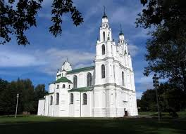
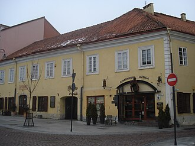
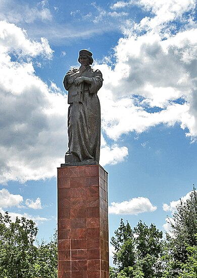

Францыск Скарына — выбітны дзеяч беларускай культуры

Францыск Скарына (каля 1490 – 1551) – знакаміты беларускі першадрукар, асветнік, мысляр, вучоны, медык і грамадскі дзеяч. Яго дзейнасць стала пераломным момантам у гісторыі беларускай і ўсходнеславянскай культуры. Дзякуючы яму беларуская мова атрымала першыя друкаваныя кнігі, а ідэі гуманізму і Рэнесансу пачалі распаўсюджвацца сярод беларускага народа.
Біяграфія
Францыск Скарына нарадзіўся ў горадзе Полацку, які ў той час быў важным культурным і гандлёвым цэнтрам Вялікага Княства Літоўскага. Яго сям'я належала да заможных гараджан. Атрымаў першапачатковую адукацыю ў родным горадзе, а затым адправіўся вучыцца ў Кракаўскі ўніверсітэт, дзе ў 1504 годзе атрымаў ступень бакалаўра, а ў 1512 годзе – доктара медыцыны ў Падуанскім універсітэце.
Нягледзячы на медыцынскую адукацыю, Скарына прысвяціў сваё жыццё кнігадрукаванню і асветніцтву. Ён лічыў, што адукацыя – гэта ключ да развіцця грамадства, таму імкнуўся зрабіць веды даступнымі для шырокіх слаёў насельніцтва.
Уклад у культуру
Францыск Скарына стаў першым, хто надрукаваў кнігі на старабеларускай мове. У 1517–1519 гадах у Празе ён выдаў «Псалтыр» і «Біблію» на беларускай мове. Гэта быў беспрэцэдэнтны крок у развіцці пісьменства і нацыянальнай культуры.
Яго кнігі адрозніваліся даступнасцю мовы, што спрыяла развіццю беларускай пісьменнасці. Скарына быў адным з першых, хто спалучаў рэлігійную і навукова-асветніцкую дзейнасць. Ён імкнуўся паказаць, што веды павінны быць даступнымі не толькі для духавенства і арыстакратыі, але і для простых людзей.
Асноўныя працы
- «Псалтыр» (1517) – першая друкаваная кніга на беларускай мове, прызначаная для чытання і навучання.
- «Біблія» (1517-1519) – пераклад і выданне Свяшчэннага Пісання на старабеларускай мове.
- «Малая падарожная кніжка» – зборнік малітваў і рэлігійных настаўленняў.
Спадчына
Францыск Скарына зрабіў вялікі ўнёсак у развіццё беларускай мовы, літаратуры і культуры. Яго дзейнасць дала штуршок далейшаму развіццю кнігадрукавання і асветы на тэрыторыі Беларусі.
Сёння яго імя носяць вуліцы, бібліятэкі, універсітэты. Яго спадчына вывучаецца даследчыкамі, а яго дзейнасць працягвае натхняць новыя пакаленні.
Выбітныя цытаты Францыска Скарыны
«Веданне — гэта святло, якое вядзе да праўды.»
«Кніга — гэта ключ да разумення свету.»